점심시간 한 시간으로 시작한 부업
말하는 사람은 Shane Hummus예요. 약사로 일하던 시절 학자금 대출이 수십만 달러였고, 일을 시작한 지 석 달 만에 그 일이 싫어졌다고 해요. 회사를 그만둘 여유는 없었어요. 그래서 하루 한 시간 점심시간에 약국 뒤편에서, 그리고 주말에 부업을 만들었다고 말해요.
그렇게 만든 일로 지금까지 1,000만 달러 넘게 벌었다는 게 본인 설명이에요. 함께 일한 사람들의 매출을 합치면 1억 달러가 넘고, 그중 거의 아무도 본업을 먼저 그만두지 않았다고 덧붙여요. 이 영상의 전제가 바로 이거예요. 본업은 그대로 두고, 남는 시간에 돌릴 수 있는 부업만 골랐다는 거죠.
부업마다 같은 순서로 설명해요
도입부 슬라이드에 체크 표시 세 개가 나와요. 무엇인지(What it is), 실제로 얼마 버는지(What it actually pays), Claude가 어디서 힘든 일을 맡는지(Where Claude does the heavy lifting)예요. 영상은 다섯 부업 모두 이 순서로 풀고, 중간마다 '직장 다니면서도 할 수 있나요?'를 한 번씩 따져 봐요.

누구를 위한 영상인지도 슬라이드로 짚어요. 간호사나 의료 쪽 종사자, 경력이 꽤 쌓인 사람, 연봉이 높은 회사원, 마케팅 매니저, 이제 막 사회생활을 시작한 사람까지 다섯 부류예요. 영상은 이 중 누구라도 다섯 가지 중 하나는 맞는 게 있을 거라고 말해요.
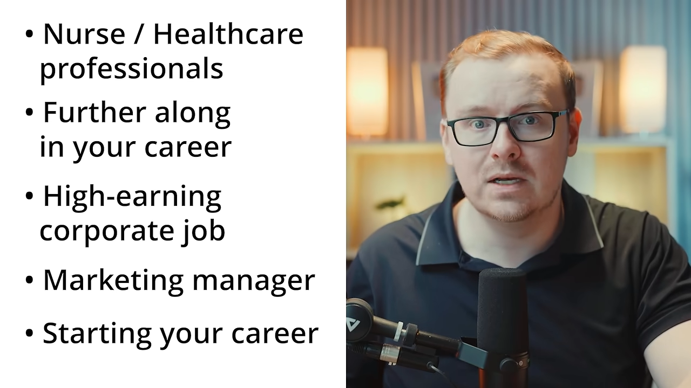
다섯 가지 한눈에 보기
영상은 부업마다 별명을 붙여요. 앱을 대신 짓는 Ghost Builder, 같은 설명을 녹화해 되풀이하는 Rerun, 먼저 겪은 사람의 Second Opinion, 사람 대신 일하는 Hired Robot, 업계 속사정을 알려 주는 Cheat Code예요. 아래 그림의 색은 이 문서의 다른 그림에서도 같은 부업을 뜻해요.
① 코딩 없이 앱 만들기
첫 번째는 가장 많이 들어 본 부업이에요. 코딩을 몰라도 원하는 앱을 평범한 말로 설명하면 Claude가 실제 코드를 써 줘요. 영상의 표현대로라면 코딩을 배우는 게 아니라 '설명하는 법'을 배우는 일이에요.
다만 영상은 처음부터 솔직하게 말해요. 앱으로 성공할 확률은 아주 낮고, 웬만한 사업보다도 낮다고요. 그래서 이 부분은 '어떻게 해야 확률이 올라가나'에 집중해요. 답은 두 가지예요. 하나에 다 걸지 말고 여러 개를 내는 것, 그리고 이미 돈이 되는 앱을 조금 바꾸는 것이에요.
28개를 내서 몇 개가 버티게 한 Max
첫 사례는 Starter Story 채널 영상에 나온 Max예요. iOS 엔지니어로 일하는 두 아이의 아빠이고, 회사를 다니는 동안 8개월에 앱 28개를 냈어요. 월 200달러였던 수입이 월 1만 달러가 됐고, 가장 빨리 낸 앱은 아이디어부터 앱스토어 출시까지 두 시간이 걸렸다고 해요.
영상이 짚는 그의 방식은 이래요. Claude로 화면과 기능을 먼저 짜고, 앱끼리 코드의 90% 정도를 다시 써요. 28개 중 대부분은 실패할 걸 알고 냈고, 그중 4개가 각각 월 1,500달러 정도를 벌어요. 전체로는 한 달에 약 300달러를 쓰고 약 1만 달러를 번다고 해요.
'Claude로 화면을 짠다'는 게 어떤 모습인지는 Max 영상의 한 장면이 보여 줘요. 나무 사진을 찍으면 종류를 알려 주는 앱인데, 필요한 화면을 다섯 개로 나눠 적었어요. 카메라 화면, 분석 중 화면, 결과 화면, 나무 상세 페이지, 내가 찾은 나무 기록이에요. 화면마다 무엇을 보여 줄지 한두 문장씩 붙어 있어요.
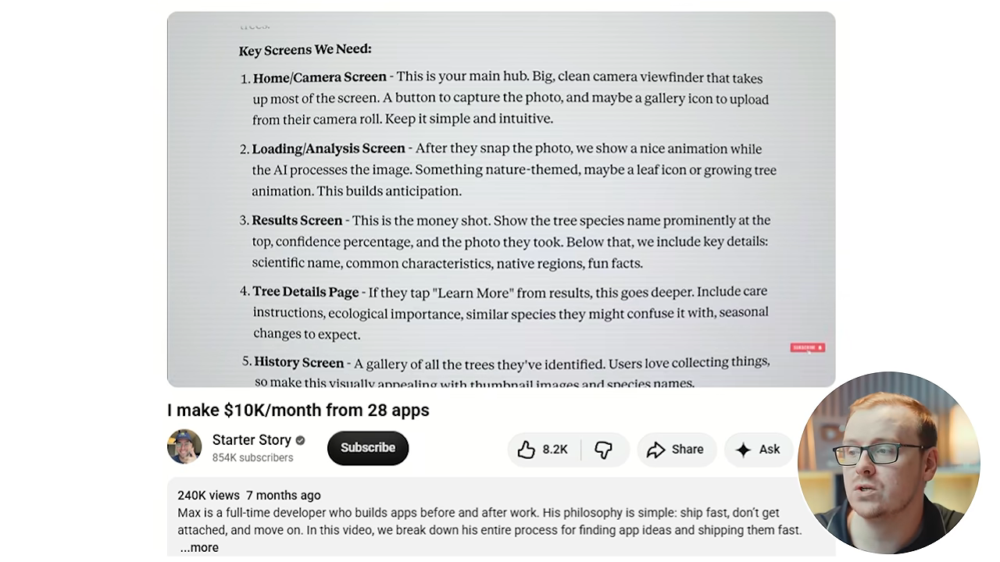
월 300달러라는 비용도 화면에 나와요. Max 옆에 도구별 월 비용이 적혀 있는데, OpenAI 200달러, Gemini 50달러, Cursor 20달러, Astro 10달러, Firebase 5달러이고 FoxData, MixPanel, Fastlane은 0달러예요. 더하면 285달러라 '약 300달러'와 맞아요.
한 가지는 짚어 둘게요. 이 목록에는 Claude가 없어요. 영상은 Max가 Claude로 화면과 기능을 짠다고 설명하지만, 화면에 나온 비용표만으로는 어떤 도구를 어디에 썼는지 알 수 없어요.
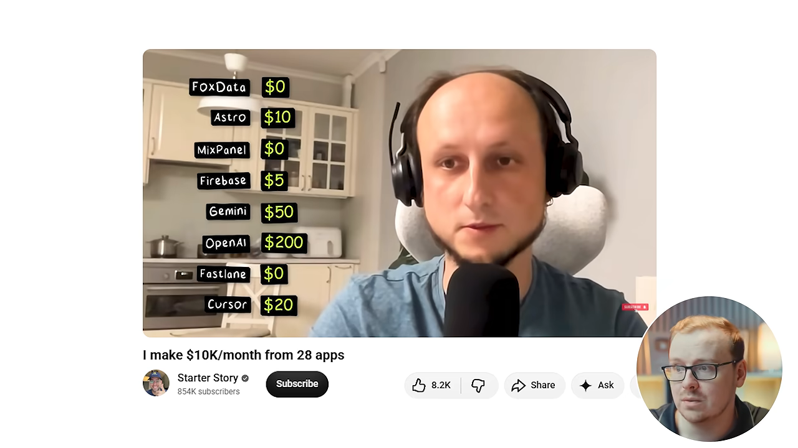
개발자가 아니어도 될까요?
Max는 원래 엔지니어였으니 반칙 아니냐는 질문에, 영상은 다른 사례를 이어 붙여요. Mikey No Code 채널에는 'Claude Code가 내 대신 1만 달러짜리 앱을 만들었다'는 영상이 있어요. Code with Beto 채널은 경험이 전혀 없는 사람에게 Claude Code로 첫 앱을 만드는 과정을 보여 주고, 20분 안에 앱 하나를 끝내는 영상도 있어요.
셰인의 직원 사례도 나와요. 코딩을 전혀 모르는 직원이 Claude로 Wispr Flow 같은 앱을 만들었다고 해요. Wispr Flow는 타이핑 대신 말로 글을 입력하는 앱이에요.
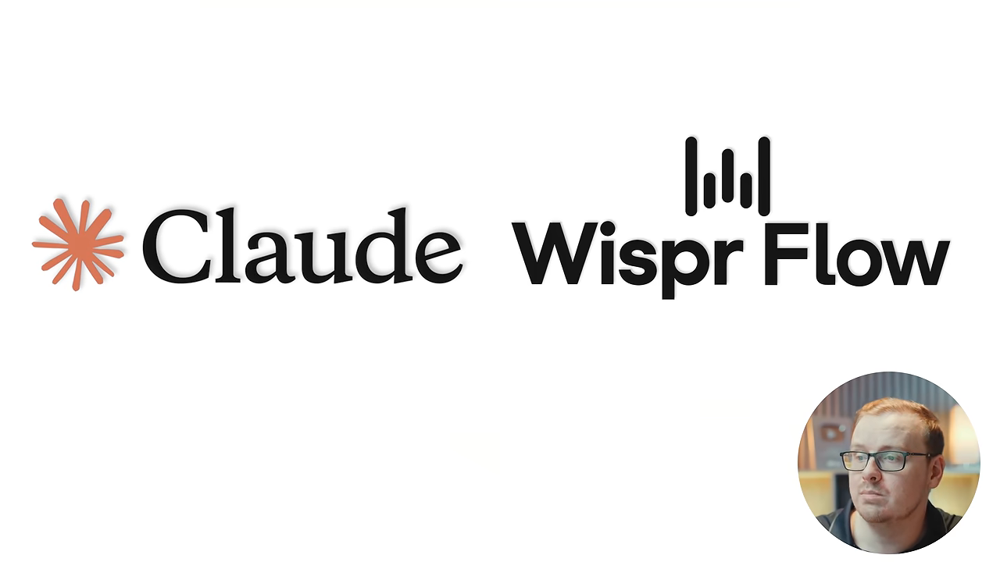
직장을 다니면서 될지에 대한 영상의 답은 간단해요. Max가 두 아이를 키우며 풀타임 엔지니어로 일하면서 했고, 앱 하나에 20분에서 두 시간이 걸렸다는 거예요. 경력을 바꾸는 일이 아니라 토요일 오후 한나절 일이라는 거죠.
이미 돈 버는 앱을 1% 낫게, 1% 다르게
영상이 '가장 똑똑한 방법'으로 꼽는 건 이미 돈을 버는 앱을 골라 조금 고치는 거예요. 화면에는 Starter Story의 다른 영상이 나와요. 제목이 '앱 3개를 베껴서 지금 월 3만 5천 달러를 번다'예요. 셰인은 이 사람이 잘되는 앱을 찾아 1% 더 낫고 1% 다르게 만드는 방식으로 1년에 40만 달러 넘게 번다고 소개해요.
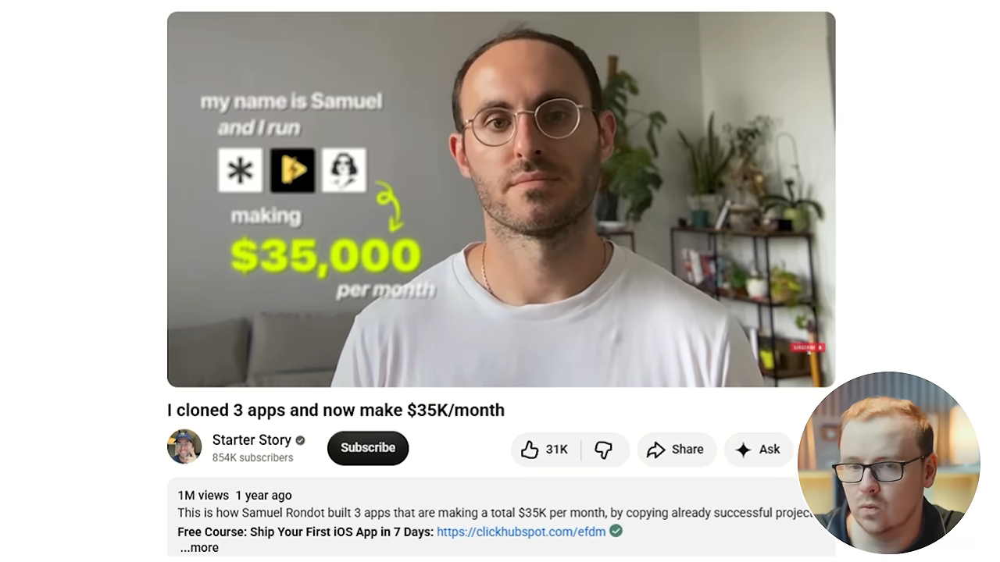
셰인은 곧바로 선을 그어요. 남의 앱을 베끼라는 게 아니라, 앱의 아이디어를 가져와 더 낫고 다르게 바꾸라는 뜻이라고요.
Claude에게 맡기는 법: 먼저 인터뷰하게 하기
영상이 가장 강조하는 요령이에요. Claude를 열자마자 '앱 만들어 줘'라고 하지 말고, 먼저 나를 인터뷰하게 해요. 앱이 무엇을 하는지, 누구를 위한 것인지, 핵심 기능 하나가 무엇인지, 내가 이미 아는 게 무엇인지 물어보게 해요. 참고할 앱이 있다면 그 앱을 개념 증명으로 보여 줘도 돼요.
코드는 그다음이에요. 답을 다 받은 Claude가 화면을 하나하나 짜고 코드를 써요. 아이디어와 안목은 내 몫이고 타이핑은 Claude 몫이에요. 셰인은 자기 회사의 유튜브용 AI 도구들도 이렇게 만들었다고 해요. AI가 필요한 맥락을 물으면 자료를 찾아 올려 주고, 충분할 때까지 그걸 되풀이한다고요.
화면에 띄운 프롬프트는 네 가지를 묻게 해요. 무슨 문제를 누구를 위해 푸는지, 출시에 꼭 필요한 기능 하나, 화면마다 일어나야 할 일, 내 실력과 일주일에 쓸 수 있는 시간이에요. 마지막 줄에서 '1차 버전에서 뺄 것'까지 말해 달라고 하는 점이 눈에 띄어요.

우리말로 옮기면 이래요. 그대로 붙여 넣어 써도 돼요.
무엇이든 만들기 전에, 한 번에 질문 하나씩 나를 인터뷰해 줘.
나는 간단한 앱을 만들고 싶은데 코딩은 못 해.
이렇게 물어봐 줘:
(1) 이 앱이 어떤 문제를 풀고, 누가 그 문제를 겪는지
(2) 출시할 때 꼭 있어야 하는 핵심 기능 하나
(3) 화면마다 무슨 일이 일어나야 하는지
(4) 내 실제 실력과 일주일에 쓸 수 있는 시간
네 가지에 다 답한 다음에야, 화면별 전체 제작 계획과
출시까지의 정확한 단계를 줘. 1차 버전에서 뺄 것도 알려 줘.② 이미 아는 걸 녹화해 가르치기
두 번째는 이미 하고 있는 설명을 녹화해서 파는 일이에요. 가르치거나 과외하거나 코칭하는 사람에게 우리는 같은 설명을 몇 번이고 되풀이해요. 그런데 돈은 한 번 받거나, 아예 못 받아요. 영상은 이걸 한 번 녹화해 두고 누가 볼 때마다 돈을 받는 구조로 바꾸자고 해요.
'나는 뭘 가르칠 만큼 전문가가 아닌데요'라는 반론에는 이렇게 답해요. 다른 분야의 전문가가 될 필요는 없고, 지금 하는 일을 그대로 가르치면 된다고요.
교실 자료를 바인더 다섯 권에 담은 Lisa Collum
첫 사례는 CNBC(Consumer News and Business Channel) Make It 기사로 소개돼요. 초등 교사였던 Lisa Collum은 자기 반에서 쓰던 글쓰기 교재를 사무용품점에서 산 바인더 다섯 권에 담았어요. 통장에 남은 마지막 99달러로 산 바인더였고, 그걸 다른 학교에 팔았어요.
화면에 형광펜으로 칠한 기사 문장이 두 개 보여요. 위쪽은 이 부업이 4년 만에 연 4만 달러인 교사 월급을 넘어섰다는 내용이에요. 아래쪽은 이 회사(Top Score Writing)가 지난해 연 순이익 190만 달러 가까이를 냈다는 내용이고, CNBC가 서류로 확인했다고 적혀 있어요. 셰인도 '매출이 아니라 이익'이라는 점을 따로 강조해요.
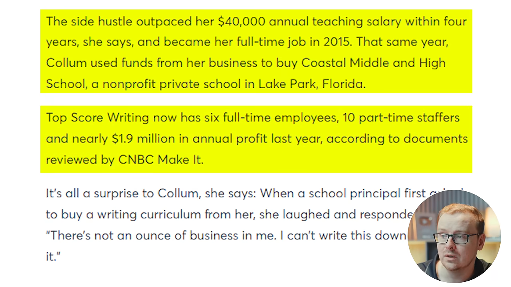
너무 기초적이라 아무도 돈을 안 낼 것 같다면
영상은 English with Lucy를 예로 들어요. 기초 문법, 어휘, 발음을 가르치는 채널이에요. 화면에는 채널 분석 도구의 요약이 나와요. 구독자 1,390만 명, 최근 28일 조회수 600만, 같은 기간 예상 수익 1만~2만 9천 달러예요.
셰인은 이 숫자를 '애드센스로만 월 1만~2만 9천 달러'라고 읽어요. 다만 화면에 적힌 건 'EST REV', 곧 외부 도구가 추정한 수익이에요. 실제 정산액은 아니라는 점을 감안하고 보면 돼요. 셰인은 또 비즈니스 콘퍼런스에서 Lucy 부부가 월 40만 달러 넘게 번다고 직접 밝혔다고 전해요.
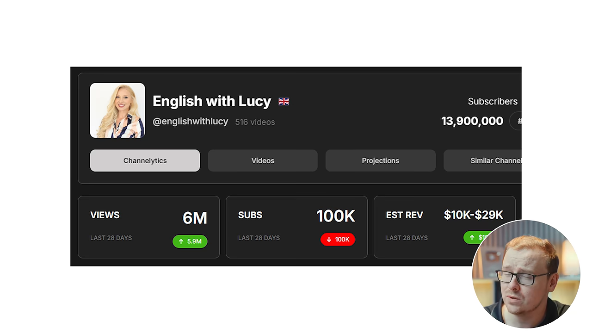
세 번째 사례는 인도의 물리 교사 Alakh Pandey예요. 지하실에서 수업을 찍기 시작했는데, 셰인이 '감자'라고 부를 만큼 카메라가 나빴다고 해요. 화면에 나오는 초기 영상은 화이트보드 글씨가 잘 안 보이고 사람도 흐릿해요.
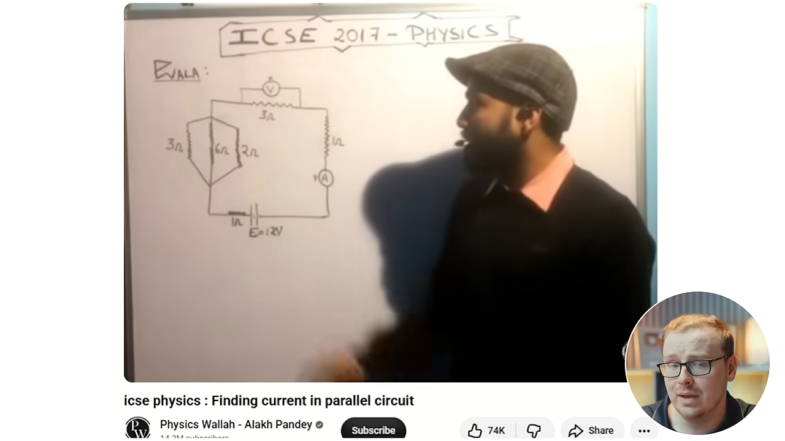
그는 이 채널을 키운 뒤 PhysicsWallah라는 앱을 냈어요. 바로 다음 화면에 나오는 기사 제목은 PhysicsWallah가 주식시장 첫 거래일에 기업가치 52억 달러를 기록했다는 내용이에요. 기사 날짜는 2025년 11월 18일이에요.
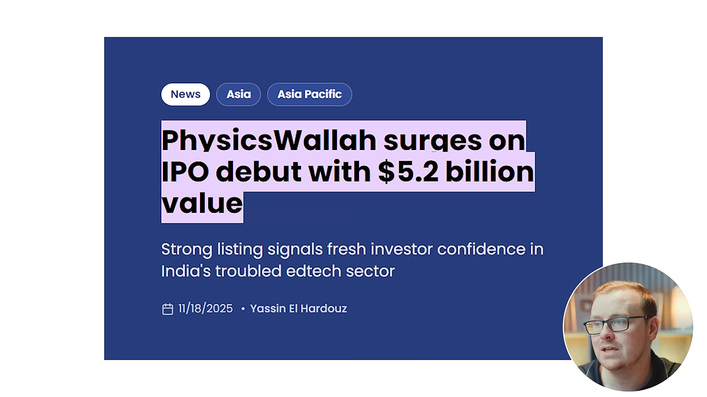
직장을 다니면서 될지에 대한 답은 이래요. 이미 가르치고 있고, 다만 한 사람씩 공짜로 하고 있을 뿐이니 녹화만 더하면 된다는 거예요.
Claude에게 맡기는 법: 한숨 나오는 질문 10개
먼저 사람들이 나에게 가장 많이 묻는 질문 10개를 적어요. 직장에서 받는 질문이 가장 흔하지만, 코칭하는 사람, 환자나 고객, 학생, 내 아이가 묻는 질문도 괜찮아요. 고를 때는 흥미로운 질문 말고 지루한 질문, 들으면 한숨이 나오는 질문을 골라요.
영상은 그 한숨을 신호로 봐요. 내가 대답하기 지겨운 질문은 수천 명이 아직도 검색창에 치고 있는 질문이라는 거예요. 10개를 Claude에게 주고, 실제로 답을 찾는 사람이 많은 순서로 줄 세우게 한 다음, 1등 질문의 첫 대본을 내 말투로 쓰게 해요.
무엇이든 쓰기 전에, 한 번에 질문 하나씩 나를 인터뷰해 줘.
나는 내가 이미 아는 걸 가르치고 싶어.
이렇게 물어봐 줘:
(1) 내 직업, 그리고 내가 하루 종일 누구에게 설명하는지
(2) 대답하기 가장 지겨운 질문 10개
(3) 그 답이 필요한 다른 사람은 누구인지
(4) 내가 공개적으로 말해도 되는 것은 무엇인지
그다음 10개를 실제 수요 순으로 순위를 매기고,
1번 질문의 전체 대본을 내 말투로 써 줘.
쉬운 말, 짧은 문장, 전문용어 없이.돈은 어디서 들어오나요?
영상은 수익 경로를 여러 개 열어 둬요. 유튜브나 다른 소셜 미디어에서 직접 버는 방법이 있고, 셰인은 그중 유튜브가 단연 낫다고 봐요. 디지털 상품을 팔 수도 있어요. 앞의 사례로 보면 PhysicsWallah는 앱을, English with Lucy는 디지털 상품을, Lisa Collum은 실물 교재를 팔았어요.
③ 먼저 겪은 결정을 안내하기
세 번째는 내가 이미 내린 결정을 앞둔 사람에게 길을 알려 주는 일이에요. 많은 사람이 곧 내릴 결정을 나는 이미 내렸고, 결과가 어땠는지도 알아요. 그 사람들은 아직 몰라요. 영상은 이 차이에 사람들이 돈을 낸다고 봐요.
해고를 앞두고 시작한 Isaiah Harris
Isaiah Harris는 곧 직장에서 해고될 상황이었어요. 지금은 싱어송라이터, 예배 인도자, 녹음 아티스트처럼 이미 노래를 하는 사람들에게 발성 워밍업과 전문가처럼 노래하는 법을 가르쳐요.
영상에 따르면 새로 만든 채널로 두 달 만에 구독자 8,000명을 모았고, 순수익 3만 2천 달러를 벌었어요. 화면에 나온 채널 머리글에는 채널 이름과 구독자 2만 3,700명, 그리고 '경험 있는 보컬리스트를 위한 채널'이라는 소개가 보여요.
책상 반대편에 있던 Kevin Hunter
'누가 내 조언을 듣겠어'라는 생각에 대한 사례예요. The Homework Guy로 알려진 Kevin Hunter는 평생 자동차 대리점 주변에서 일했어요. 지금은 차를 살 때 크게 손해 보지 않는 법을 알려 주고, 구독자가 46만 명이에요. 차를 팔지 않고, 판매하는 쪽 책상에서 배운 걸 알려 줘요. 상담 전화를 예약할 수 있는 웹사이트도 따로 운영해요.
화면에 나오는 그의 영상 제목은 '파이낸스 오피스 파일: 가짜 할인'이에요. 파이낸스 오피스는 차를 살 때 대출과 보증 상품을 계약하는 대리점 안 사무실이에요. 내부자만 아는 수법을 밖에 알려 주는 구조가 제목에서부터 드러나요.

셰인 자신의 경우
셰인도 같은 방식으로 시작했어요. 약사로 일하면서 부업으로 대학 전공과 직업 고르는 법을 가르쳤어요. 좋은 전공과 나쁜 전공, 사기당하지 않고 학교 고르는 법, 좋아하면서도 실제로 돈이 되는 진로를 다뤘어요. 싫어하는 직업 때문에 빚을 진 경험이 그 출발점이었어요.
슬라이드 오른쪽 사진이 그가 대본을 쓰던 약국 뒤편이에요. 손님이 뜸해 한 시간이 비면 뒤로 가서 대본을 쓰고, 녹화는 주말에 했다고 해요.
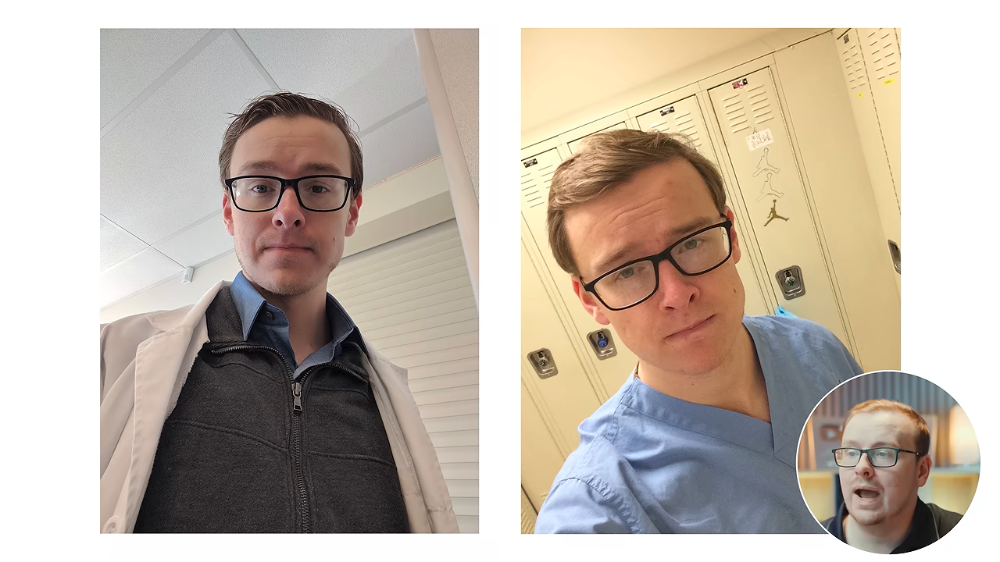
그래서 이 부업에 필요한 건 시간이 아니라 이미 내린 결정 하나라고 영상은 정리해요. 셰인은 점심시간에, Isaiah는 해고를 앞두고 해냈다는 거예요.
Claude에게 맡기는 법: 타임머신 질문
내가 내린 가장 큰 결정을 적어요. 학위, 이사, 직업, 주택담보대출, 수술 같은 것이고, 여러 개를 적어도 돼요. 그다음 그 결정을 내리기 전날의 나와 똑같은 자리에 선 사람에게 무슨 말을 해 줄지 적어요.
영상은 이걸 '그때 필요했지만 아무도 해 주지 않은 말'이라고 불러요. Claude는 그 말을 대본으로 바꾸고, 내 상처와 이야기, 교훈은 내가 채워요. 화면의 프롬프트는 결정마다 '배우는 데 무엇을 치렀는지'까지 묻게 해요.
한 번에 질문 하나씩 나를 인터뷰해 줘.
이렇게 물어봐 줘:
(1) 내가 내린 큰 결정 중, 다른 사람들이 아직 마주하고 있는 것
(2) 각 결정 전에 누가 말해 줬으면 했던 것
(3) 그걸 배우는 데 치른 대가
(4) 지금 그 갈림길에 서 있는 사람은 누구인지
그다음, 마주한 사람이 가장 많은 결정이 무엇인지 알려 주고
그 대본을 내 말투로 써 줘. 쉬운 말, 짧은 문장, 과장 없이.④ 기업에 AI 에이전트 팔기
네 번째는 기업에 AI 에이전트를 파는 일이에요. 영상은 이걸 '고용된 로봇'이라고 불러요. 회사가 지금 사람에게 돈을 주고 시키는 반복 업무 하나를 골라, 그 일을 대신하는 작은 자동화를 만들어요. 그리고 그 사람 인건비의 일부만 받아요.
기술도 큰돈도 없이 시작한 사례
'기술을 잘 알아야 하지 않나'에 대한 답으로 Nate Herk가 나와요. 초보 시절에 AI 에이전트 4개를 2만 3천 달러에 팔았다고 해요. 화면에는 그 경험을 다룬 그의 영상 제목이 보여요.
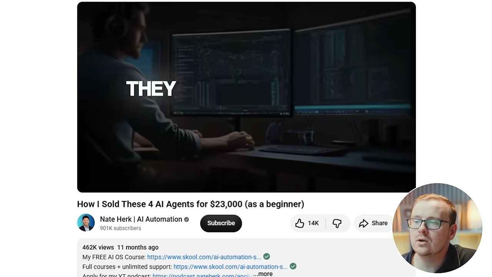
'시작하려면 돈이 많이 들지 않나'에 대해서는 DimeADozen 사례를 들어요. 화면에 2023년 10월 CNBC Make It 기사가 나와요. 두 친구 Aiello와 Powers가 총 185달러를 들여 AI 도구를 만들었고, 약 7개월 동안 6만 6천 달러 넘게 벌었어요. 그리고 이 부업을 15만 달러에 팔았어요.
형광펜 친 문장을 보면 6만 6천 달러는 CNBC Make It이 서류로 확인한 숫자예요. 셰인도 '스크린숏이 아니라 실제 서류'라고 강조해요. 기사에는 도메인 150달러와 호스팅·데이터베이스 35달러를 빼면 거의 다 이익이었다는 말도 있어요.
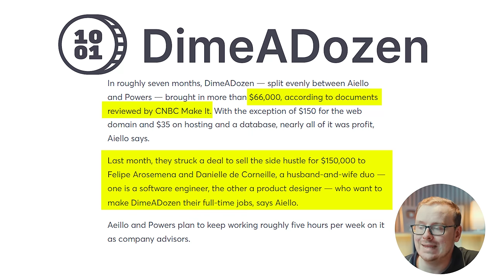
동네 피자 가게 말고, 이미 온라인에 있는 회사
직장을 다니며 할 수 있냐는 질문에 영상은 '물론'이라고 답해요. 대신 조건을 하나 붙여요. 길 건너 피자 가게가 아니라, 이미 온라인에서 장사하는 회사를 노리라는 거예요. 오프라인 가게도 나중에는 될 수 있지만, 지금은 온라인 회사가 낫다고 봐요.
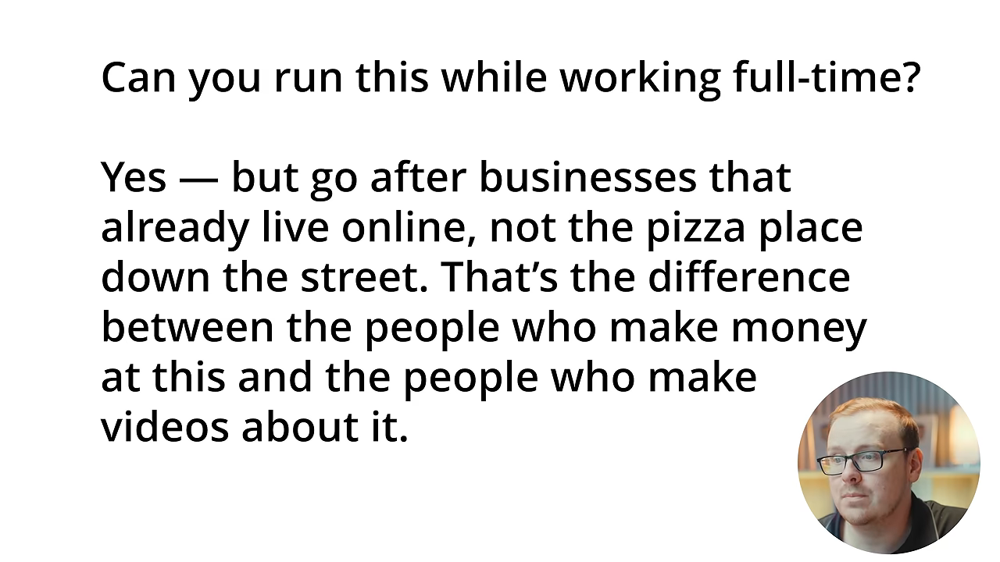
Claude에게 맡기는 법: 내 직장의 반복 업무 하나
내 직장에서 누가 서툴게 하는 걸 지켜본 반복 업무 하나를 골라요. 영상의 예는 들어오는 이메일 분류하기, 밀린 청구서 독촉하기, 같은 답장 다섯 개 되풀이하기예요. 그게 곧 상품이에요. 그 일이 얼마짜리인지, 누가 그 일을 싫어하는지 이미 알고 있으니까요.
그다음 Claude에게 자동화를 만들게 하거나 제안서를 쓰게 해요. 값은 시간 단위가 아니라 월정액으로 받아요. 화면의 프롬프트는 '그 사람의 시간당 비용'과 '그 부서에서 결재하는 사람'까지 묻게 해요. 가격과 영업 대상이 여기서 정해져요.
한 번에 질문 하나씩 나를 인터뷰해 줘.
나는 기업에 자동화를 팔고 싶어.
이렇게 물어봐 줘:
(1) 내가 안에서부터 이미 잘 아는 업계
(2) 사람들이 몇 시간씩 허비하는 걸 내가 지켜본 반복 업무
(3) 그 일을 하는 사람이 대략 시간당 얼마인지
(4) 그 부서에서 돈을 결재하는 사람은 누구인지
그다음 자동화를 설계하고, 월 단위로 가격을 매기고,
전문용어 없는 쉬운 말로 제안 메일을 써 줘.두 번째 조언: 이미 팔리는 걸 다르게
셰인은 조언을 하나 더 붙여요. 사람들이 이미 사고 있는 걸 보고, 비슷하게 하되 조금 다르게 하라는 거예요. 배관공들이 이미 웹사이트를 사고 있다면 배관공에게 웹사이트를 팔되, 경쟁자보다 다르게 또는 더 잘하라는 식이에요. 누군가 이미 하고 있다는 건 그게 통한다는 개념 증명이라고 봐요. 첫 번째 부업의 '1% 낫게, 1% 다르게'와 같은 생각이에요.
⑤ 내가 일하는 시스템을 설명하기
다섯 번째는 영상이 '아무도 생각하지 못하는 것'이라고 소개하는 부업이에요. 내 일을 하는 법을 가르치는 게 아니라, 내 일이 속한 시스템을 설명해요. 그 시스템은 안에 있는 사람에게는 익숙하지만, 밖에 선 사람에게는 무서운 곳이에요.
열쇠 그림 아래 세 문장이 내부자가 가진 걸 정리해요. 그 세계의 말을 이미 할 줄 알고, 어느 문을 두드려야 하는지 알고, 서류가 실제로 무슨 뜻인지 안다는 거예요.
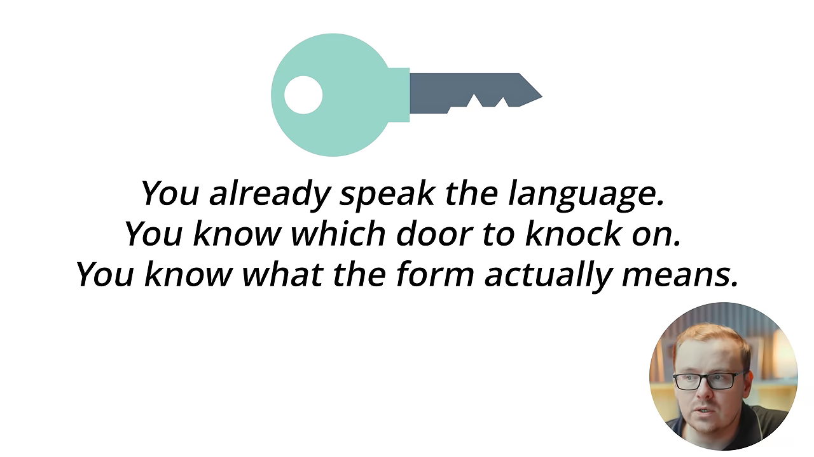
간호사 두 사람의 경우
'영상이라고는 찍어 본 적도 없다'는 사람을 위한 사례로 Nurse Jen이 나와요. 지금도 의료 현장에서 일하는 정규 간호사이고, 본인 말로는 유튜브에 발끝도 담가 본 적이 없었어요. 두 달이 채 안 돼 이 일로 직장 월급만큼 벌게 됐고, 그건 제휴 마케팅과 브랜드 협찬을 더하기 전 금액이라고 해요.
화면에는 그녀가 직접 말하는 장면이 짧게 나와요. 자막에 '애드센스로만 한 달에 6,000달러 조금 넘게'라고 적혀 있어요. 채널 이름은 Nurse Jen | Healthcare Navigation, 곧 '의료 시스템 길 안내'예요.
한 번뿐인 일 아니냐는 반론에는 Nurse Julie가 나와요. 간호사로 33년을 일했고, 20년 넘게 아무도 진단하지 못한 자가면역질환을 앓았어요. 간호사의 임상 지식과 '모두가 포기한 환자'의 경험을 둘 다 가진 셈이에요. 영상은 그녀의 영상 하나가 두 달 만에 조회수 10만을 넘겼다고 말해요.
화면의 썸네일이 그 영상이에요. 제목은 베르베린이라는 보충제를 제대로 먹는 법이고, 조회수 11만 8천, 올린 지 두 달이라고 적혀 있어요.
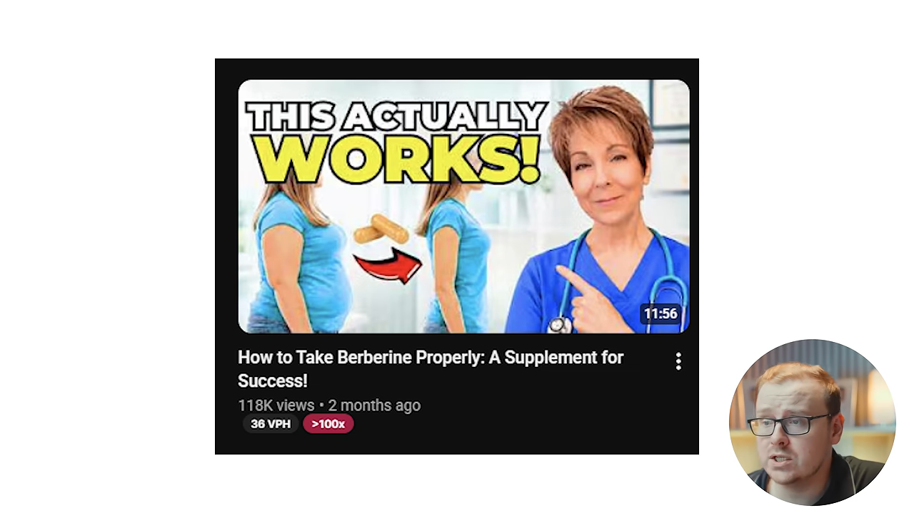
의료 쪽만 되는 거냐는 질문에는 IT(Information Technology), 사이버보안, 디지털 마케팅, 회계와 금융 같은 분야도 있다고 답해요. 화면에는 사이버보안 쪽 사례로 'GRC For Mere Mortals' 채널의 Nicole Enesse가 나와요. 0에서 월 8만 5천 달러까지 왔다는 문구가 붙어 있어요.
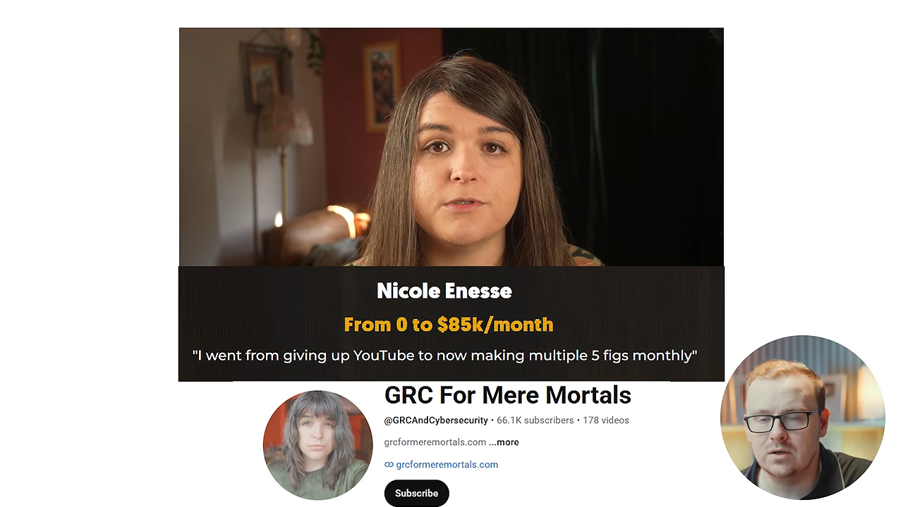
Claude에게 맡기는 법: '다들 아는 거잖아' 함정
업계 밖의 누군가가 뭘 물었을 때, '그건 다들 알잖아'라는 말이 나오려던 마지막 순간을 떠올려 보래요. 그 사람들은 몰라요. 영상은 그게 이 사업의 전부라고 말해요. 내게는 상식이어도 직장 밖의 사람들에게는 아닐 가능성이 커요.
방법은 간단해요. 내 직장에서 모두가 당연하게 여기는 것 다섯 개를 적고, 외부인이 알면 화를 낼 만한 것부터 찍어요. Claude는 하나하나를 대본으로 바꿔 줘요. 화면의 프롬프트는 '법적·윤리적으로 말할 수 없는 것'을 묻고, 그 선을 넘는 아이디어를 표시해 달라고 해요.

한 번에 질문 하나씩 나를 인터뷰해 줘.
나는 외부인이 헷갈려하는 업계 안에서 일해.
이렇게 물어봐 줘:
(1) 내 업계와 내가 실제로 맡은 역할
(2) 고객이나 환자, 의뢰인이 늘 잘못 아는 것
(3) 내부자는 알지만 외부인이 알면 화가 날 만한 것
(4) 내가 법적·윤리적으로 말할 수 없는 것
그다음 외부인에게 그 답이 얼마나 절실한지 순서로
영상 아이디어 10개를 주고, 내가 말한 선을 넘는 것은 표시해 줘.다섯 가지를 나란히 놓고 보면
다섯 부업을 같은 기준으로 놓으면 이렇게 정리돼요. 표의 사례와 숫자는 모두 영상에 나온 그대로예요.
| 부업 | 영상 속 대표 사례 | 파는 것 | Claude가 맡는 일 | 내가 채우는 것 |
|---|---|---|---|---|
| ① 코딩 없이 앱 | Max — 8개월에 앱 28개, 월 약 1만 달러 | 앱 | 화면 설계와 코드 | 아이디어, 안목, 핵심 기능 하나 |
| ② 아는 것 가르치기 | Lisa Collum — 바인더 다섯 권에서 연 순이익 약 190만 달러 | 녹화한 설명, 디지털 상품, 교재 | 질문 순위와 첫 대본 | 매일 받는 질문, 녹화 |
| ③ 결정 안내하기 | Isaiah Harris — 두 달에 구독자 8,000명, 3만 2천 달러 | 먼저 겪은 결정에 대한 조언 | 대본 | 겪은 일, 상처, 교훈 |
| ④ AI 에이전트 판매 | DimeADozen — 185달러로 시작해 15만 달러에 매각 | 반복 업무를 대신하는 자동화 | 자동화 제작과 제안 메일 | 업계 경험, 업무의 값, 결재권자 |
| ⑤ 시스템 설명하기 | Nurse Jen — 두 달이 안 돼 직장 월급 수준 | 업계 속사정을 풀어 주는 영상 | 대본 | 내부자 지식, 말하면 안 되는 선 |
표를 세로로 읽으면 두 갈래가 보여요. ②, ③, ⑤는 결국 영상을 찍는 일이에요. Claude는 대본까지 써 주지만, 카메라 앞에 서서 녹화하는 건 내 몫이에요. ①과 ④는 앱이나 자동화처럼 내가 화면에 나오지 않아도 돌아가는 물건을 만들어요. 대신 만든 걸 팔아야 하는 일이 남아요.
다섯 프롬프트의 공통 뼈대
영상이 띄운 프롬프트 다섯 개는 모두 같은 순서로 짜여 있어요. 먼저 한 번에 질문 하나씩 나를 인터뷰하게 하고, 질문 네 개에 답한 다음에야 결과물을 달라고 해요. 앱 부업에서 '앱 만들어 줘'라고 바로 말하지 말라던 요령이 다섯 프롬프트 모두에 들어 있는 셈이에요.
다섯 가지 모두에 필요한 것
영상은 마지막에 다섯 부업이 모두 통하지만, 모두 한 가지가 있어야 한다고 말해요. 사람들이 나를 찾아오게 하는 길, 곧 트래픽과 유통이에요. 앱도, 녹화한 강의도, 자동화도 아무도 모르면 팔리지 않아요. 셰인은 그 통로로 유튜브를 인터넷에서 가장 좋은 곳이라고 꼽아요.